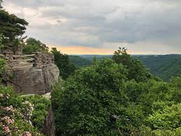
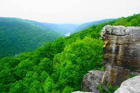

Picture Feed:


About Coopers Rock State Forest:
Coopers Rock State Forest is located along the Cheat River Gorge and is scattered with overlooks and massive outcroppings of rock.
The park is named after a fugitive who was a cooper by trade.
He allegedly fled from the law and hid out near the overlook and sold his barrels to people nearby for multiple years.
Enormous borders encompass many of the hiking trails, and there is also a fishing pond within the State Forest that is stocked with trout.
Along with hiking, rock climbing, and fishing, visitors also have the opportunity to go camping here. There is also a gift shop.